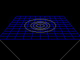
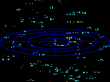
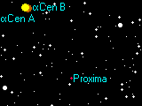
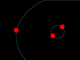
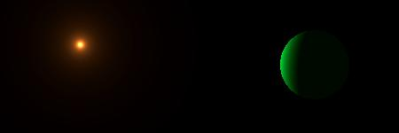

الكون على مقياس 12.5 سنة ضوئية
النجوم الأقرب
 عدد النجوم على مقياس 12.5 سنة ضوئية = 33 عدد النجوم على مقياس 12.5 سنة ضوئية = 33 |
حول هذه الخريطة
تظهر هذه الخريطة جميع النجوم التي تقع على مسافة 12.5 سنة ضوئية من الشمس. غالبية النجوم هي نجوم حمراء قزمة و بمعدل كتلة تبلغ 10% من كتلة الشمس و لمعان يبلغ 1% أي جزء من مئة من ضيائية الشمس.و من المعروف و الشائع بأن 80% من نجوم الكون هي نجوم حمراء قزمة و من النجوم النموذجية لهذا النوع نجم بروكسيما - Proxima.
| خرائط إضافية |
|---|
|

|
ينقلنا هذا المخطط ما بين الأرض و يسافر بنا بعيدا عن مدار الأرض إلى حيث تقبع أقرب منظومة نجمية إلى الأرض. و يظهر بوضوح كم هي المسافة هائلة بيننا و بين أقرب نجم.
|
|

|
في هذا المخطط تم رسم و تحديد النجوم التي تقع على مسافة 20 سنة ضوئية و ذلك باستخدام البيانات المدرجة اسفل الجدول.
|
| بيانات و مصنفات |
|---|
|

|
يتواجد أكثر من مئة 100 نجم ضمن مقياس قطره 20 سنة ضوئية حول الشمس. وهنا نجد لائحة بالنجوم المعروفة لنا و التي تقبع على هذه المسافة.
|
|  |
نعرض في هذه الصفحة صورا متحركة بسيطة لأنظمة نجمية ثنائية و ثلاثية و رباعية المكونات. و ذلك لإظهار كيفية دوران النجوم حول بعضها الآخر. |
معلومات عن النجوم القريبة
- الشمس - النوع =G2, القدر=-26.8, المسافة =0.0000158 ly
و هي نجم أصفر قزم نموذجي. و يدور حوله ثمانية كواكب
- قنطورس الأقرب Proxima Centauri - النوع=M5, القدر=11.0, المسافة=4.22 ly
- هذا النجم الأحمر القزم هو أقرب نجم إلى الشمس، و هو أحد نجوم منظومة ألفا قنطورس
Alpha Centauri system و على الرغم من أنه لا يبعد عن نجم منظومته أكثر من 0.24 سنة ضوئية إلا أنه يحتاج إلى أكثر من 1 مليون سنة ليتم دورة كاملة حول النجمين الباقيين. اكتشف نجم بروكسيما Proxima عام 1915 من قبلRobert Innes و كان يعرف وقتها بأنه النجم الأقل لمعانا.كما يعرف بأنه يغير من لمعانه بمقدار درجة لمعان في فترة زمنية قصيرة في دقائق.
- ألفا قنطورس - Alpha Centauri A,B - النوع=G2+K0, الأقدار=0.0+1.4, المسافة =4.39 ly
- ليس بعيدا كثيرا عن نجم بروكسيما يقبع نجمان قزمان أحدهما أصفر و الثاني برتقالي و يشكلان مع بعضهما منظومة ألفا قنطورس النجمية حيث يدور أحدهما حول الآخر في مدة 80 سنة، و يشكلان مع بعضهما جرما سماويا هو الالمع في القبة السماوية الجنوبية.و ليس بعيدا عنهما يقبع بروكسيما العضو الثالث في هذه المنظومة و لكنه خافت من القدر 4.8
- نجم برنارد Barnard's Star - النوع=M5, القدر=9.6, المسافة=5.94 ly
- يشتهر بأنه يمتلك أكبر حركة زاوية بين النجوم ، كما أنه نجم أحمر قزم خافت و يتحرك على خلفية النجوم 0.29 درجة كل قرن و اكتشف من قبل
E Barnard عام 1916, و لقد ساد الاعتقاد في ستينيات القرن الماضي بأنه يمتلك كوكبين غير مرئيين يدوران حوله و لكن الأرصاد اللاحقة دحضت هذا الادعاء.يعتقد أنه بعد 8000 عام قادمة سيصبح نجم برنارد هو أقرب النجوم إلينا .
- نجم وولف - Wolf 359 - النوع=M6, القدر=13.5, المسافة=7.80 ly
- نجم شديد الخفوت و قزم أحمر تم اكتشافه من قبل Max Wolf عام 1918. و لسنوات عديدة لاحقة تم اعتباره الأكثر خفوتا بين النجوم. المعروفة
- لالند Lalande 21185 - النوع=M2, القدر=7.5, المسافة=8.31 ly
- جاء ذكره ضمن مصنف JJ Lalande's star catalogue الذي تم إصداره عام 1790,خ هو واحد من ألمع النجوم الحمراء القزمة ( الألمع بالنسبة لنوعه) و لكن يحتاج إلى منظار لرؤيته. قدم G Gatewoodفي 1996 تقريرا يتحدث عن دلائل و مؤشرات حول وجود كوكب بحجم المشتري يدور حوله و لم يتم التأكيد على صحة التقرير.
- الشعرى اليمانية - Sirius A,B - النوع=A1+DA, الأقدار=-1.4+8.4, المسافة=8.60 ly
- تعتبر الشعرى من ألمع النجوم في سماء الليل و من النجوم الأكثر ضيائية على مسافة 25 سنة ضوئية. تم اكتشاف نجم قزم أبيض مرافق للشعرى لأول مرة عام 1852, و هو القزم الأبيض الأول الذي تم رؤيته. و يتم دورته حول الشعرى في 50
عاما.
- لويتن - Luyten 726-8 A,B - النوع=M5+M5, الأقدار=12.4+13.3, المسافة=8.73 ly
- نجم يتألف من مكونين هما قزمين أحمرين و تشتهر منظومة النجوم هذه باسم UV Ceti, و هو اسم المكون الثاني المتغير في هذه المنظومة، و يشتهر هذا النجم بأنه من نجوم الشعلة حيث يشتد لمعانه عدة أقدار و ذلك عندما يقذف من سطحه شعلات لهب كالتي تخرج من سطح شمسنا و لكنها أكثر شدة و طاقة. يتطلب دوران أحدهما حول الآخر 200 عام.
- روس - Ross 154 - النوع=M4, القدر=10.4, المسافة=9.69 ly
- قزم أحمر خافت. من النجوم القريبة التي صنفها
Frank Ross عام 1930. و يعرف أيضا بأنه من نجوم الشعلة.
- Ross 248 - النوع=M6, القدر=12.3, المسافة=10.33 ly
- نجم أحمر قزم.
- إبسلون النهر - Epsilon Eridani - النوع=K2, القدر=3.7, المسافة=10.50 ly
- نجم قزم برتقالي . تم تقصي إشارات عن حياة عاقلة قد تكون موجودة حول هذا النجم من قبل مرصد Green Bank الراديوي عام 1960. , و كانت النتائج سلبية. اكتشف القمر الصناعي . IRAS الكثير من الغبار يتخذ مدارا حول النجم مما يشير إلى احتمال وجود مجموعة شمسية قيد النشأة و حديثا (Aug 2000), تم اكتشاف كوكب بحجم المشتري على بعد 3.2 AU أي
(480 مليون كيلومتر)يدور حوله.
- Lacaille 9352 - النوع=M2, القدر=7.4, المسافة=10.73 ly
- نجم أحمر قزم و لامع بالقدر الذي يمكننا من رؤيته بالمنظار. و أول من أشار الى ذكره Nicolas de Lacaille's في مصنفه catalogue of southern hemisphere stars الذي نشره عام 1752.
- Ross 128 - النوع=M4, القدر=11.1, المسافة=10.89 ly
- نجم أحمر قزم خافت. و يعرف أيضا باسم FI Vir - لتصنيفه كنجم متغير.
- Luyten 789-6 A,B,C - النوع=M5+M5+M7, القدر=13.3+13.3+14.0, المسافة=11.1 ly
- فيما يبدو بأنه يحتوي على ثلاثة نجوم حمراء قزمة ضمن نظامه النجمي. يدور المكونين الرئيسيين حول بعضهما في 2 سنة أما المكون الثالث الخافت فيدور حول المكون الأول تقريبا بالمعدل ذاته.
- الشعرى الشامية - Procyon A,B - النوع=F5+DA, الأقدار=0.4+10.7, المسافة=11.41 ly
- نجم لامع أبيض مائل للأصفر و يعد الثامن في ترتيب درجة لمعانه في السماء.و يعد نجم الشعرى الشامية هذا الأضخم بين النجوم التي ضمن مسافة 25 سنة ضوئية إذ يبلغ قطره ضعف قطر الشمس. يدور حوله نجم مرافق له و قزم أبيض و الذي تمت رؤيته بصريا في العام 1896.
مدة دورته 41 سنة
- 61 Cygni A,B - النوع=K5+K7, الأقدار=5.2+6.1, المسافة=11.41 ly
- نظام نجمي مزدوج يتألف من نجمين قزمين برتقاليين و شهرته جاءت كونه النجم الأول الذي استطاع F Bessel عام 1838.
تحديد مسافته.
المكونان متشابهان كثيرا و تفصل بينهما مسافة (86 AU) و يحتاج إلى 700 عام ليتم أحدهما دورته حول الآخر.
- Struve 2398 A,B - النوع=M4+M5, الأقدار=8.9+9.7, المسافة=11.6 ly
- نظام نجمي مزدوج مؤلف من نجمين قزمين أحمرين يدعيان Struve 2398 و جاءت التسمية من المصنف catalogue of
double stars الذي نشر عام 1827. هذه الأنظمة المزدوجة تعرف أيضا بأسماء أخرى مملة BD+59�1�71915. عن بعضهما.و كلا النجمين متباعدان كثيرا (50 AU) و يدوران حول بعضهما في فترة 450 سنة.
- Groombridge 34 A,B - النوع=M2+M6, الأقدار=8.1+11.1, المسافة=11.64 ly
- زوج آخر من النجوم القزمة الحمراء، و يدعى نظام النجوم هذا Groombridge 34
ذكر في مصنف 1838 catalogue of northern stars و أحيانا باسم BD+43�1�744. كلا النجمين هما نجمين متغيرين و لهما اسم GX And و
GQ And. و يقبع كلا النجمين من بعضهما على بعد (150 AU) و مدة دورتهما 2500 سنة .
- Giclas 51-15 - النوع=M6, القدر=14.8, المسافة=11.8 ly
- نجم قزم أحمر خافت و الأخفت لنجوم تقع على بعد 14 سنة ضوئية.و لمعانه يقدر بنسبة 0.01% من لمعان الشمس.
- Epsilon Indi A,B,C - النوع=K5+T1+T6, القدر=4.7, المسافة=11.83 ly
- نجم قزم برتقالي. شبيه بالنجم Epsilon Eridani, و لكنه أصغر قليلا و اخفت منه. يدور حول Epsilon Indi زوج من الأقزام البنيةو هي نجوم صغيرة لدرجة غير كافية لبدء تفاعل نووي داخلها.اكتشفت عام 2003 و يتمان دورة حول بعضهما في 16عاما، و يبعدان عن النجم الرئيسي مسافة 1500 AU اي (220 بليون كيلومتر) و يحتاجان إلى
70 000 سنة لإتمام دورة حوله.
- Tau Ceti - النوع=G8, القدر=3.5, المسافة=11.90 ly
- شبيه الشمس الوحيد و الأقرب إليها. كان محط البحث و التمحيص عن إشارات لحياة عاقلة حوله في العام 1960 هو و النجم Epsilon Eridani و لكن النتائج كانت سلبية.
- Luyten 372-58 - النوع=M5, القدر=13.0, المسافة=12.1 ly
- نجم قزم أحمر خافت جدا. تم تسجيله منذ عدة عقود، و تم تحديد بعده بدقة منخفضة.
- Luyten 725-32 - النوع=M5, القدر=12.1, المسافة=12.1 ly
- نجم قزم أحمر خافت
- Luyten's Star - النوع=M3, القدر=9.8, المسافة=12.39 ly
- نجم أحمر قزم . تم تسميته على اسم مكتشفه الذي حدده بأنه من النجوم القريبة في عام Willem Luyten 1935. يقبع النجم على بعد 1.2 سنة ضوئية من نجم الشعرى الشامية و لكنه غير مرتبط به.

أبسلون النهر
Epsilon Eridani نجم يدور حوله كوكب كبير الحجم وقد رسم هنا كما يفترض أن يبدو حقيقة.